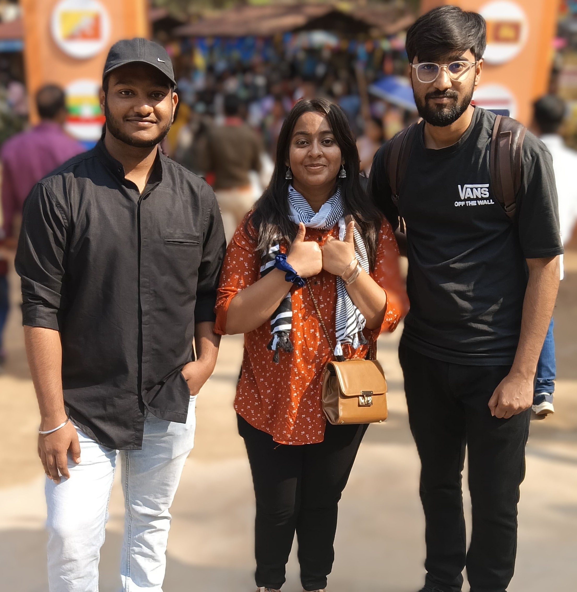
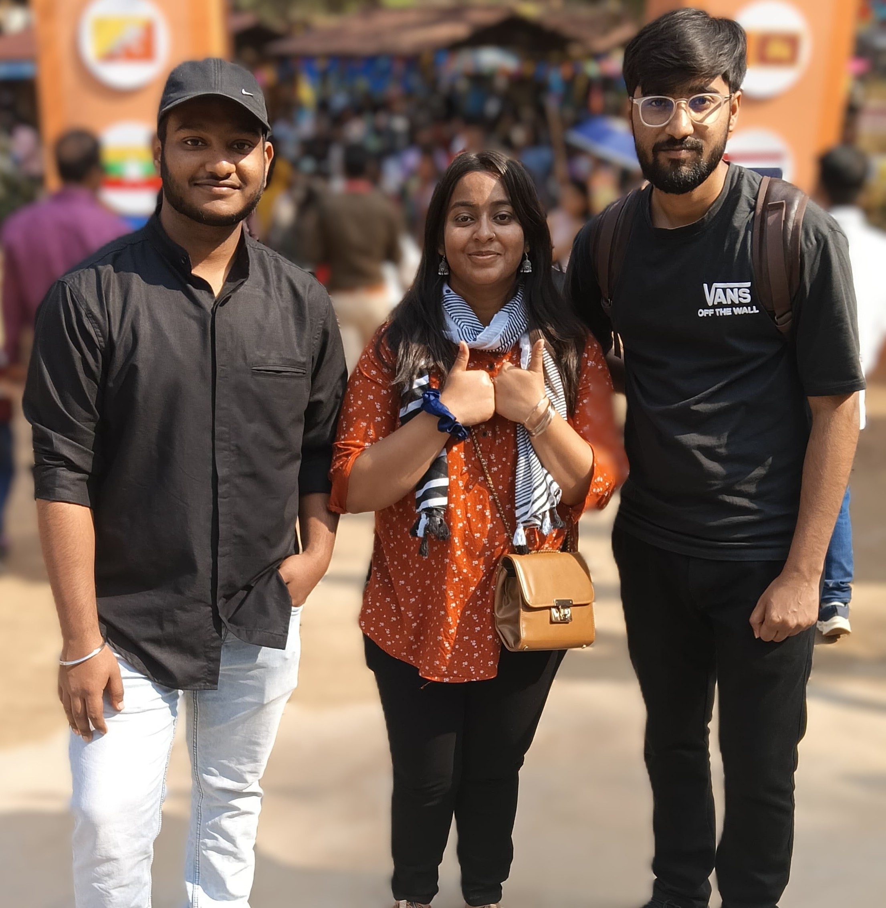
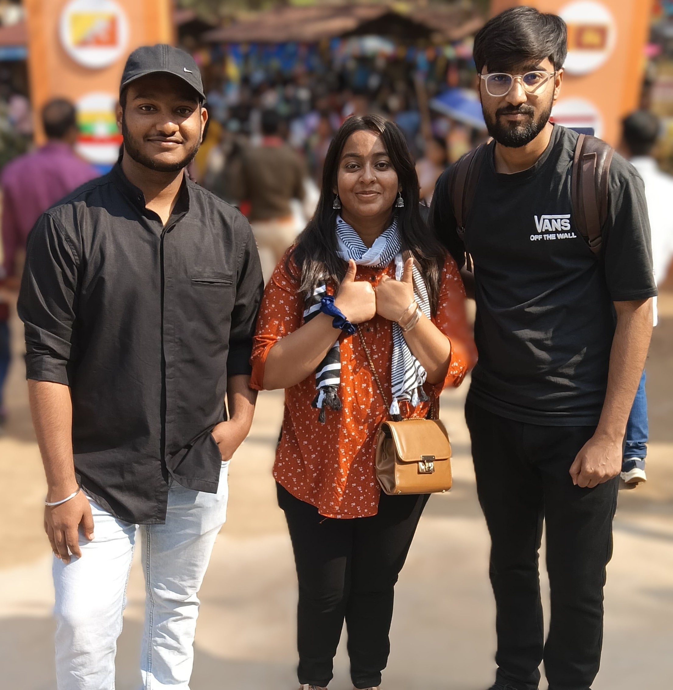

Hello! I'm Mayank Aggarwal, a passionate developer, creative graphics designer, enthusiastic photographer, and video editor who loves transforming ideas into meaningful digital experiences.
I live in South Delhi, Sangam Vihar. I'm always excited to explore the latest technologies and how they can be used to solve real-life problems creatively and efficiently.
I’m currently pursuing my Bachelor of Computer Applications (BCA) at Manav Rachna International Institute of Research and Studies (MRIIRS), with a strong interest in software development, artificial intelligence, and user interface design.
I actively participate in hackathons, seminars, webinars, and workshops, constantly learning and expanding my knowledge. I've also worked on various academic and personal projects involving web and mobile applications, and I love collaborating with teams to build impactful solutions.
